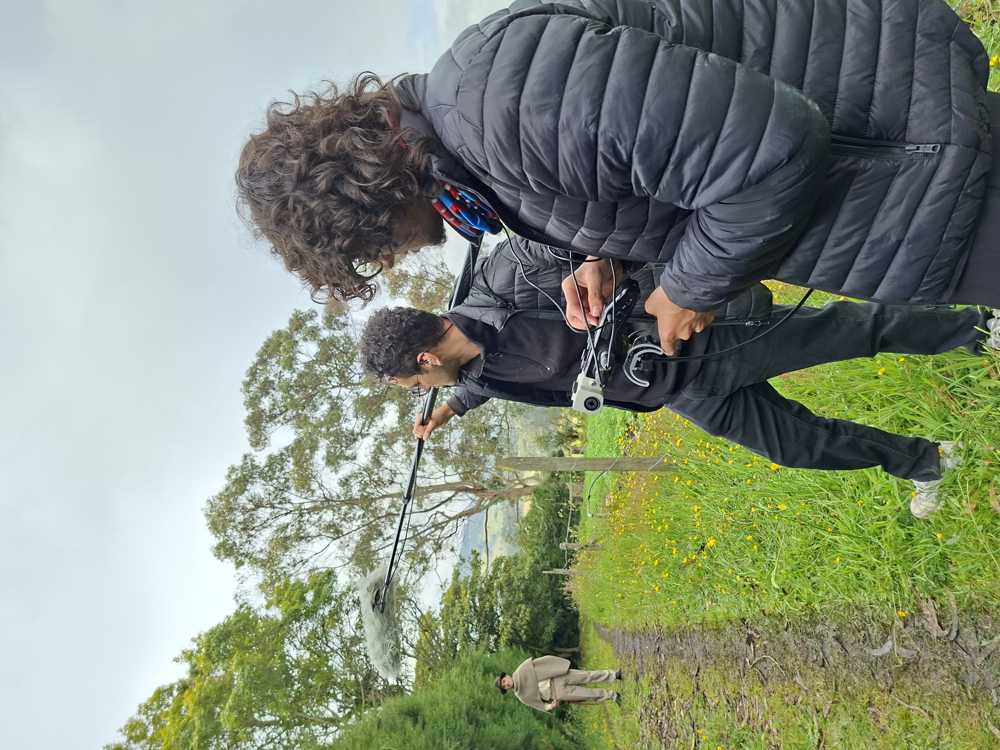

Grabando
¡Hola! Soy Daniel Pulido
Un ingeniero de sonido con experiencia en grabación y postproducción de audio para medios audiovisuales. ¡Listo para poner a sonar tu proyecto!
00:42
Grabación & Postproducción
Cuidamos el proceso desde el diseño, al sonido directo, operación de boom y micrófonos de solapa, cableado de actores, gestión de audio en set, la edición y la mezcla.
Cortometraje de época
Puente Nacional
Una mirada cercana y emotiva al desplazamiento en la época de la violencia en Colombia.
Resultado
Detrás de cámaras

Cortometraje
Sensaciones
Concientización de los síntomas de la diabetes.
Resultado
Entrevista para documental
Un lugar para habitar: El documental
Recuento de algunas experiencias de la comunidad sorda en el mundo de la música y el arte.
Resultado
02:10